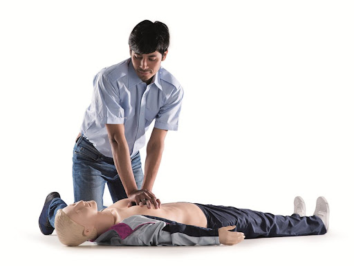
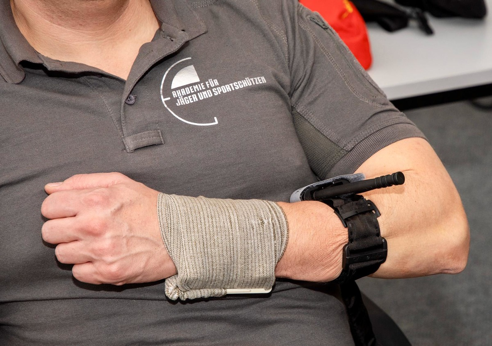
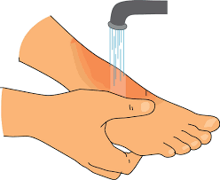

What is Cardiopulmonary Resuscitation
Cardiopulmonary resuscitation (CPR) is a set of measures aimed at maintaining the life of a person whose
heart has stopped and breathing has ceased. CPR includes chest compressions and artificial respiration.
Chest compressions help restore blood circulation, and artificial respiration provides oxygen to the
lungs. It is important to know that CPR should be started immediately after discovering a person without
signs of life and continued until the ambulance arrives or until independent breathing and heartbeat are
restored.


First Aid for Bleeding
Bleeding is the escape of blood from blood vessels. First aid for bleeding depends on the type and
intensity of bleeding. For minor cuts and abrasions, it is enough to wash the wound with water and treat
it with an antiseptic, and then apply a sterile bandage. For heavy bleeding, it is necessary to stop the
blood immediately by applying a pressure bandage directly to the wound. If the bleeding does not stop,
you should call an ambulance and continue to provide first aid until they arrive. In case of arterial
bleeding, it may be necessary to apply a tourniquet above the site of bleeding.
First Aid for Burns
A burn is damage to the skin and tissues caused by exposure to high temperatures, chemicals, electric
current, or radiation. First aid for burns depends on the severity of the burn. For first-degree burns,
when only the top layer of skin is damaged, it is enough to cool the burned area with cold water for
10-20 minutes and apply a sterile bandage. For second-degree burns, when blisters form, it is important
not to open them and seek medical help. For third-degree burns, when deep layers of skin and tissue are
damaged, it is necessary to call an ambulance immediately and cover the burned area with a clean cloth.
You should not apply oils, creams, or other ointments to burns, as this can worsen the condition.
